Oat Tortillas | Cooked | Oil-Free | Gluten-Free
Today’s recipe is a thin, unleavened flatbread (tortilla), made from gluten-free oats and water! They are soft and pliable with a neutral, slightly sweet flavor. They hold together and remain flexible even when chilled. I would say that’s a win! These tortillas can be enjoyed with savory or sweet fillings.
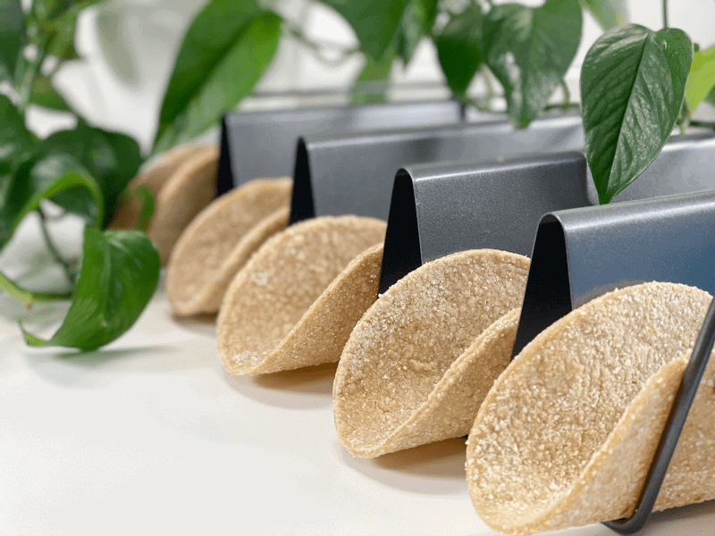
The other day, I made Jackfruit and Black Bean Tacos (vegan and oil-free) and I yearned to use a tortilla, but our stock of tortilla shells was limited and I wanted Bob to get his fill, so I put the taco filling on a bed of salad (no complaints!) but I have to say that I did have to dab the corner of my drooling mouth as I watched Bob eat his tacos. So, the next day, I was bound and determined to make a tortilla wrap so I could be part of the taco-eating festivities! (Hurray for leftovers!)
Oat Tortilla Tips
- Be sure to read through the recipe before starting. These tortillas are super easy to make, but I took time to document every step thoroughly.
- It is important to grind the oats to a fine flour, sifting out the larger pieces and regrinding them. This technique will lead to a pliable tortilla.
- If the dough appears to be too dry to roll out, add hot water a tablespoon at a time, kneading it together. You shouldn’t need to if the directions are followed carefully, but things happen, and this should resolve any problems.
- After mixing the dough, it will appear too sticky to even deal with. Trust the process.
- Feel free to add your favorite spices and herbs but I suggest making the recipe as-is before you start experimenting, so you have a baseline to compare it to.
- Make sure the water you use is close to boiling, or boiling. You can do this in a pan on the stovetop or in a teakettle.
Cooking the Tortillas
- Be sure to use a non-stick surface so they don’t stick. With a non-stick surface, you don’t have to add any oils to the pan.
- Don’t cook these while distracted. You will want to be present while they are cooking so you can pay attention to when they need to be flipped.
- After both sides have cooked for 30-60 seconds, you will flip them once after cooking an additional 30 seconds each side. During these 30 second segments, press a flat spatula along the complete surface of the tortilla. You might hear squeaky sounds (which is very entertaining) as you press small amounts of air from them. Soon they should start to puff up. Once they start puffing and you see small tan dots on the surface, remove from the heat and let them cool on a cooling rack.
Make Every Bite Count
- Use certified organic rolled oats, especially if you have any gluten intolerances. Oats are inherently gluten-free but can be cross-contaminated by other crops. So, when purchasing them, the package must indicate certified organic.
- Here’s a fun task for you…while making these wraps, I challenge you to hum or sing throughout the process. Either of these acts activates the parasympathetic nervous system and creates a calming effect. This is a great stress-reducer to add into your daily life.
I hope you enjoy this super-simple recipe. Please let me know what you think down below in the comment box. Have a blessed and peaceful day. amie sue
 Ingredients
Ingredients
yields 6-7 (5.5″ diameter circles)
- 1 1/2 cup gluten-free rolled oats
- 1 cup boiling water
- 1 Tbsp lime juice
- 3/4 tsp sea salt
Preparation
- Place the oats in a grinder, processing them until they become a fine flour.
- You can use a blender, food processor, or spice grinder —whatever gets the job done.
- Pour the flour through a sieve that is placed over a bowl.
- With the back of a spoon, stir and press the oat flour through the sieve. Any large pieces should be put through the grinder again, making sure that the oats are thoroughly transformed into a flour-like texture.
- Add the salt to oat flour and mix well.
- Set aside 1/4 cup of the flour to use during the dough-rolling process.
- In a separate clean bowl, combine the boiling water and lime juice.
- Add 1/2 cup of oat flour to the hot water and stir. Add 3/4 cup more of the flour and stir until it creates a very thick paste. Let it rest for 15 minutes.
- Place a non-stick sheet in front of you on the counter. (I used a dehydrator sheet).
- You can roll the dough out on the countertop itself, but I found that by rolling it on the thin nonstick sheet, I could lift and peel the tortilla shape off of it without any effort.
- If you roll it out directly on a hard surface, use plenty of oat flour on the surface and dough so it doesn’t stick.
- Remove the dough from the bowl, keeping the reserved 1/4 cup of flour nearby.
- Place the dough in the palm of your hand (adding some flour to your hands as needed to prevent sticking) and knead it by folding it over and over upon itself.
- The dough will become smooth and dry enough to easily handle.
- Shake a little flour on the surface and start the rolling process.
- Pinch off about 1/4 cup of dough, kneading and shaping it into a ball, followed by flattening it.
- Place the dough on the surface, sprinkle some flour on top, and roll out large enough to create a 5 1/2″ circle. If it gets too thin it will be hard to handle, so scoop it up, add more dough, knead it together, and repeat the rolling process.
- To create a 5 1/2″ circle, find an object in your kitchen that matches that diameter–a pot lid, canister lid, etc.
- Place it on the dough and press down, giving it a little shimmy. Remove the excess dough around the edges and add it back to the dough that is yet to be rolled out.
- Place the dough on a plate and cover it with a piece of parchment or wax paper. I did this between each tortilla that I rolled out so they didn’t stick to one another.
- Repeat the process until all the dough is used up.
Cooking Process
- Heat a frying pan or a griddle to high heat.
- I used a griddle that has a large enough surface to cook 5 at a time. I turned the heating dial to 400 degrees (F).
- If using a frying pan, you will be able to cook only 1 at a time. Heat the pan on high, then reduce to medium-high once ready to cook.
- Tip — to know if the heating surface is hot enough, add a drop of water. It should immediately turn into a ball and move around the pan like a mercury ball. For a visual, click (here).
- Cook the first side for 30-60 seconds (small tan dots should be forming on the underside).
- Flip and cook for 30-60 seconds, pressing down on the surface of the tortilla.
- Flip and cook for about 30 seconds more. At this point, keep pressing down all over the tortilla, soon it starts to puff up.
- Each one cooks a little differently so don’t get locked into an outcome.
- Once it has puffed up, remove it from the heat, placing it on a cooling rack, covering it with a towel.
- Repeat the whole process until all the dough is rolled out and cooked.
- Don’t expect the tortilla to brown as it cooks. It pretty much stays the same color through the cooking process.
- When done cooking, remove to a cooling rack. Repeat until all are cooked.
- Store leftovers in the fridge with parchment or wax paper between them. The cooled tortillas can be stored in an airtight container in the refrigerator for up to 1 week or the freezer for up to 3 months.
- Eat cold or reheat in a pan on the stovetop.
-
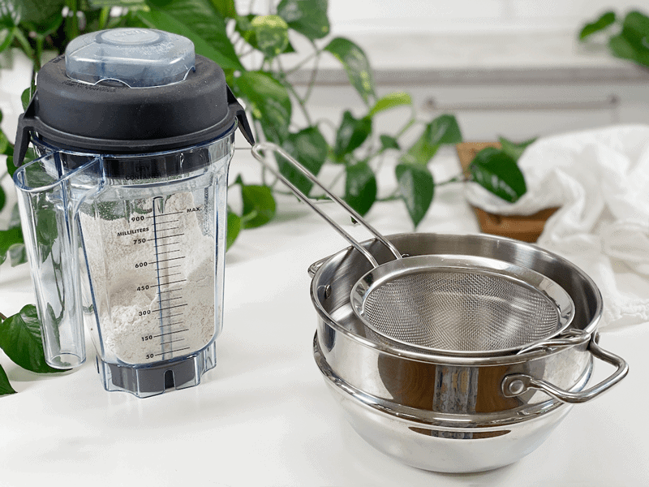
-
Start by grinding rolled oats into a fine flour texture.
-
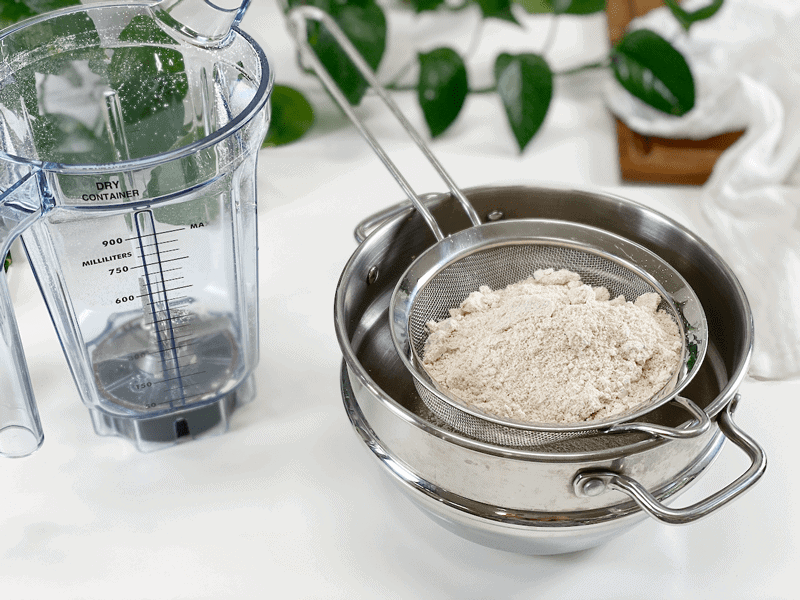
-
Place the flour into a sieve to separate any large pieces. Regrind those until it is all sifted through.
-
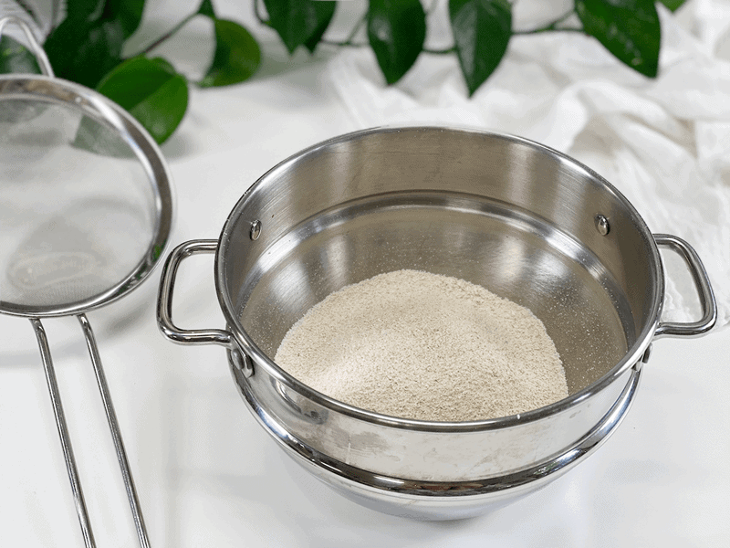
-
Now you should have a fine flour. Add the salt and mix together.
-
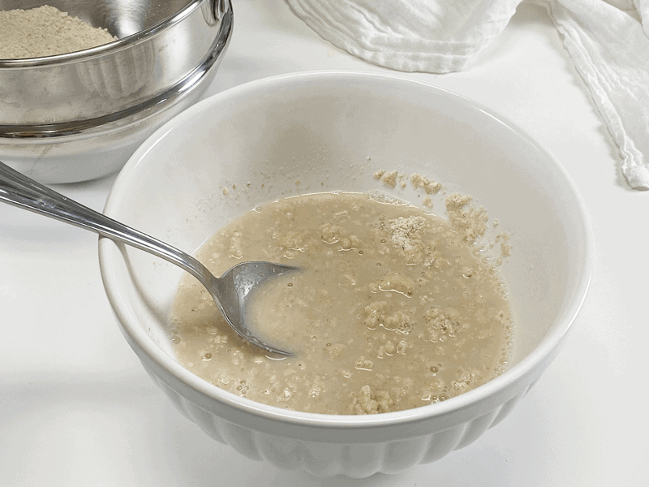
-
Add boiling water and lime juice to a bowl, followed by 1/2 cup of oat flour. Stir together (it will be lumpy, to be expected).
-
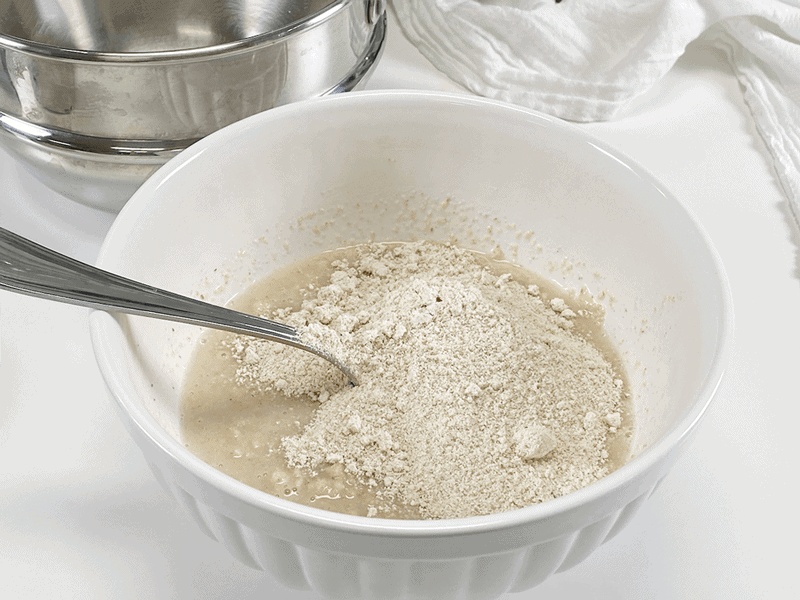
-
Add the remaining flour and stir together.
-
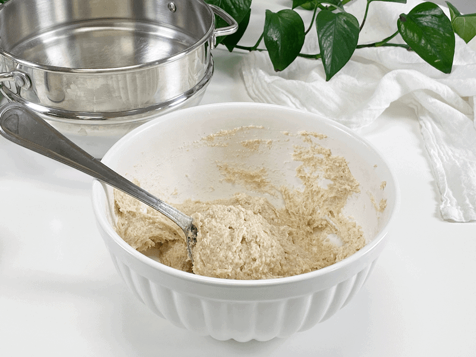
-
It will look like this. Scary, huh? Not to worry. Let it rest for about 15 minutes.
-
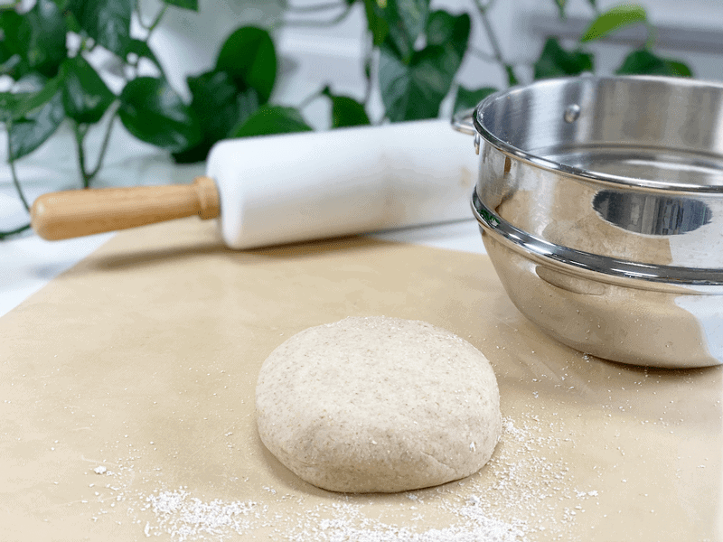
-
Knead the dough until it creates a smooth ball. as shown in the photo.
-
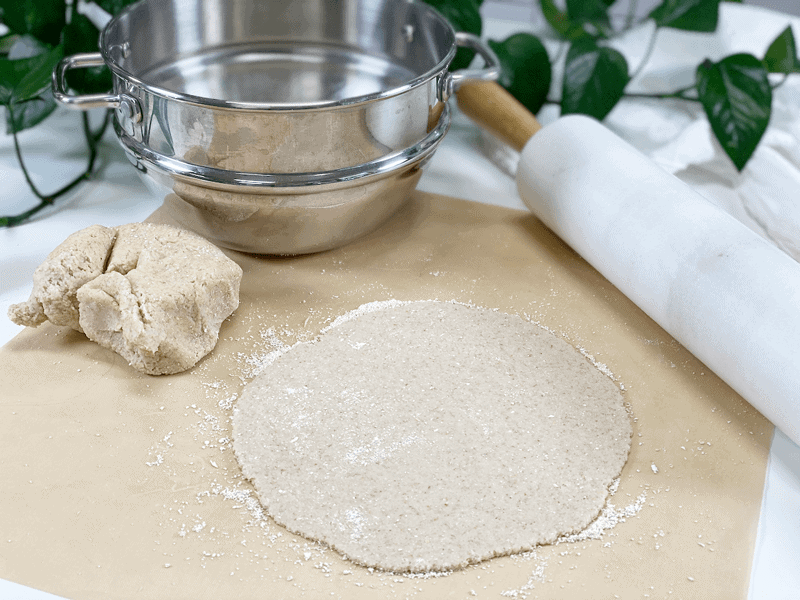
-
Pinch off a chunk of the dough and roll out to about 1/8″ thickness. Use extra oat flour underneath and on top of it so nothing sticks to the mat or rolling pin.
-
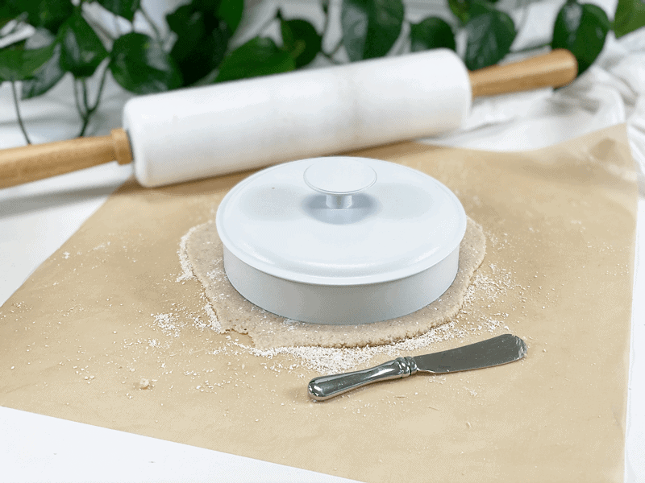
-
Cut out 6″ circles. I used the lid to one of my jars. I pressed down, gave it a little shimmy, and removed the excess dough.
-
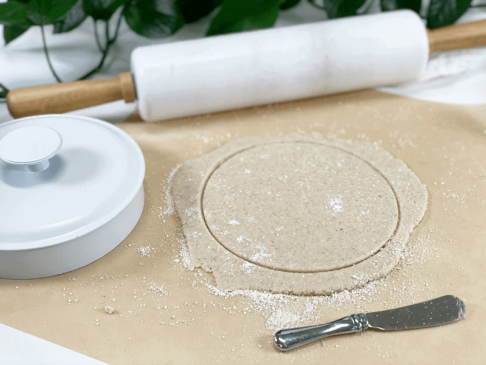
-
If your template doesn’t cut through the dough, use a knife, going around the edges of the lid. Remove excess dough.
-
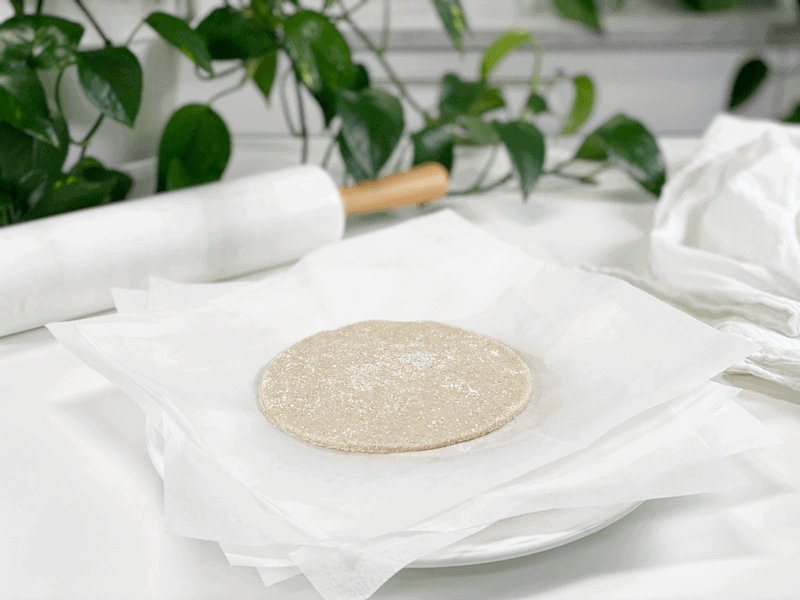
-
As you make the tortillas, stack them with a piece of parchment or wax paper between each one to prevent any possible sticking.
-
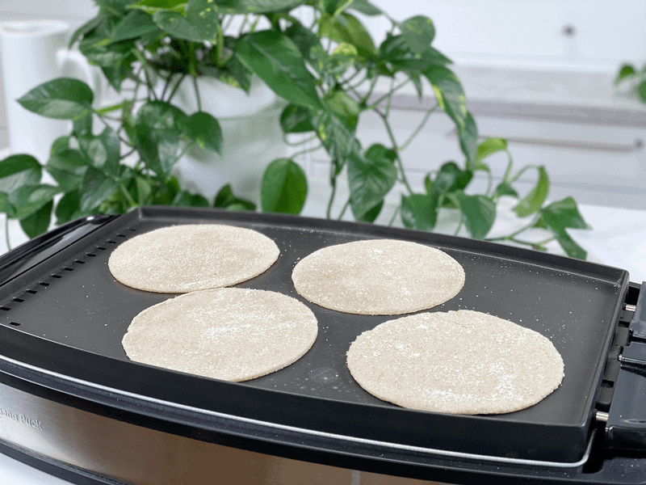
-
Heat the cooking surface to high (400 degrees F on my griddle)… and cook as instructed above.
-
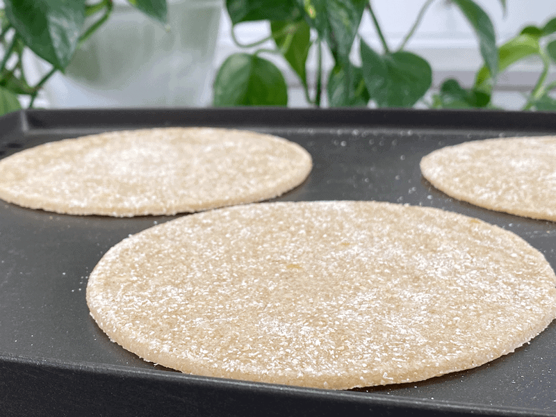
-
Remember, they don’t darken as they cook.
-
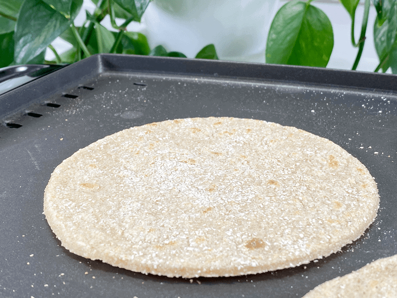
-
As you can see, small brown dots formed while cooking. Sometimes they puff up a bit…all to be expected. The air will deflate from them after cooking.
-
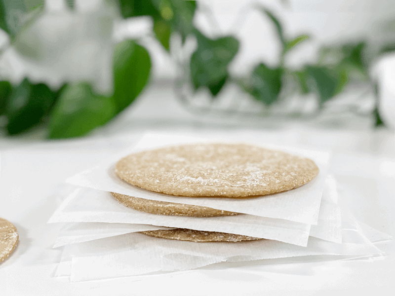
-
Once cooked, stack again with paper in between.
-
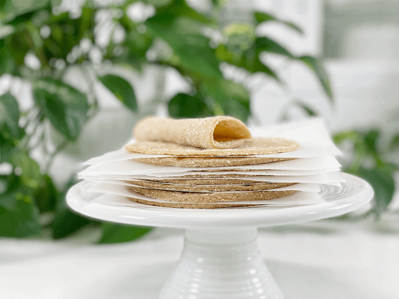
-
The tortillas will be sturdy and flexible. Enjoy!
© AmieSue.com